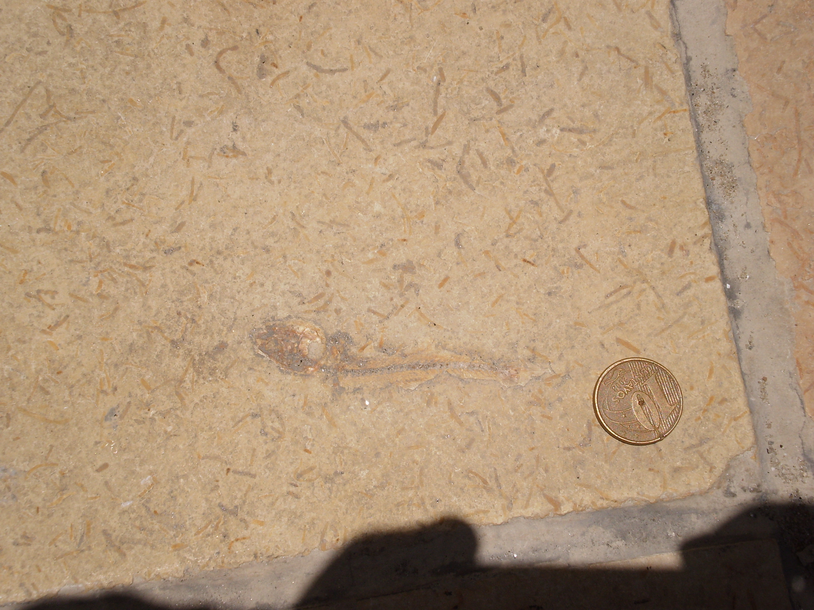
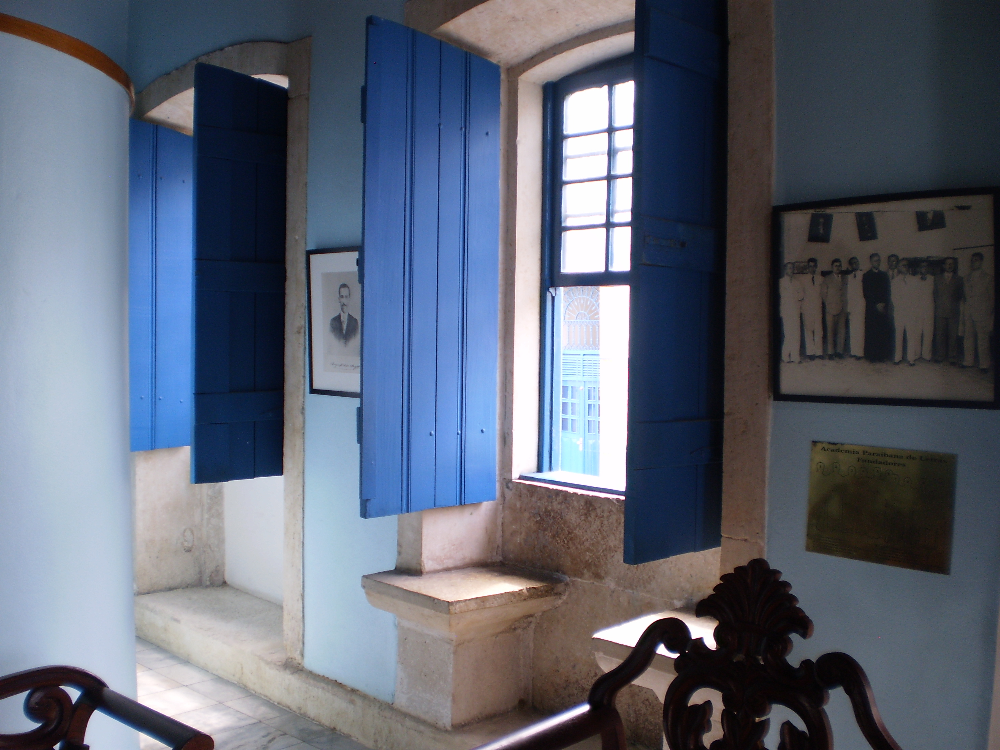

-

Geotourism Tour of the Historic Center of João Pessoa
-

Geotourism Tour of the Historic Center of João Pessoa
-

Geotourism Tour of the Historic Center of João Pessoa
Hydrographic Basins - Evolution
The coastal marginal basins are divided into Sergipe-Alagoas, Pernambuco, Paraíba, Potiguar and Barreirinhas. Its formation is directly related to the continental drift that separated the African and South American continents, with the Paraíba Basin the last to maintain contact with Africa. The area of this thesis is entirely inserted in the Paraíba Basin, one of the northeastern basins belonging to the Brazilian marginal basins, called Coastal Province (Almeida et al., 1977). For this work, the limits of the Paraíba Basin, from Lineamento Pernambuco to Lineamento Paraíba 1 will be considered. In the literature, this basin was part, until the mid-1990s, of the Pernambuco-Paraíba Coastal Sedimentary Basin 2 , when a separation was proposed by Lima Filho (1998) in two basins, Pernambuco and Paraíba , as they present origin, evolution and distribution of different formations, with the Linear Pernambuco as a limiting element. To date, the delimitation of the contour of the Paraíba-Pernambuco-Potiguar basins is not consensual, as well as discussions about the stratigraphic column and evolutionary history are also controversial.
Figure 1 shows the northeastern portion of some marginal basins, locating the Paraíba Basin between the Pernambuco Shear Zone and the Mamanguape Fault. This basin is subdivided, from south to north, into sub-basins: Olinda, Alhandra (where our study area is located) and Miriri. It borders: to the north, with the Natal Platform of the Potiguar Basin, through the Lineamento Paraíba, which extends through the Fault of Mamanguape; to the south, with the Pernambuco Basin, through the Lineamento Pernambuco; and to the west, with the crystalline base. This will be the configuration that will be followed in this thesis.

All of the evolutionary proposals presented below, for the sedimentary strip between Recife and Natal, therefore covering the Paraíba Basin and the eastern portion of the Potiguar Basin, were elaborated from a sum of data obtained geophysical studies, paleoecological and paleontological investigations, field studies, stratigraphy, sedimentology, among others, by several authors. However, it is worth mentioning that, of the marginal basins, the Paraíba Basin is one of the least studied.
After the advent of Plate Tectonic Theory , in the 1970s, explanatory proposals for the dynamics of continental drift intensified, especially between the South American and African plates, and about the tectonic consequences of this event, such as the expansion of the ocean floor, the opening of the Atlantic Ocean and, pertinent to our research area, the formation of marginal coastal sedimentary basins in Brazil.
In that decade, there was some unanimity among international scientists that the separation of South America and Africa, with the complete opening of the Atlantic Ocean, without a delayed connection, would have occurred in the Lower Cretaceous 3 . The Brazilian Northeast would be the last link between the two plates. From studies carried out in Brazil, this age began to be questioned, through information involving paleontology, geophysics and sedimentology (BEURLEN, 1971; TINOCO, 1971) where, up to the Upper Cretaceous, there would be a link, in the form of a “ land bridge ” between the two continents (RAND, 1976; RAND and MABESOONE, 1982).
According to Rand and Mabesoone (1982), before the beginning of the Africa-South America separation, in the region where the Paraíba Basin would later form, there was probably a system of failures, with EW direction, that crossed both continents, such as the Pernambuco Linearity, for example, still in the Lower Cretaceous. From the opening of the proto-ocean, to the north and south of this connection between them, the existing faults, as the separation progressed, facilitated the sliding of the plates, acting as transient faults, until the rupture of the bridge, in Campaniano (83.6-72.1 Ma.) - Maastrichtian (72.1-66 Ma.). Thereafter, the transverse faults changed to transforming faults and the Equatorial Atlantic Ocean joined the South Atlantic, in the Upper Cretaceous4.
Before the rupture of this bridge, during the Jurassic-Cretaceous, according to Asmus (1975) and Porto and Asmus (1978), adapting their evolutionary model for the Paraíba Basin, in the so-called pre-rift stage, there is a pre-volcanic swelling and stretching continental crust, with subsequent failure in blocks and subsidence, in a mixture of tectonic and eustatic factors (LIMA FILHO, 1998; LIMA FILHO et al., 2005), forming the marginal intracratonic basins and the horsts-grabens system that characterizes them and which will be properly analyzed in the next subchapter.
With the stabilization of the basement, as the divergence of plates advances, the thin and fractured crust of the northeastern coast cools and the terrain sinks, at the end of the Turonian (93.9-89.8 Ma, sensu PETRI, 1987; FEITOSA et al., 2002), along previously formed fault plans, generating a homoclinal and staggered ramp, gently sloping to the east, while the Pernambuco Basin rises (PETRI, 1987; LIMA FILHO et al., 2005). Alto de Mamanguape serves as a barrier that limits the Paraíba Basin, to the south, with the Natal Platform, to the north (FEITOSA et al., 2002).
In the Santoniano-Campaniano Inferior, deposition begins in the Paraíba Basin, in a depressed region, with clastic sedimentation of the Beberibe Formations and, later, Itamaracá , typical of the environment coastal (continental-estuarine) and transitional-marine, respectively (AMARAL et al., 1977), forming a continental clastic wedge. Asmus (1975) proposes that this filling started earlier, in Aptiano (125-113 Ma), while Lima Filho (1998) and Lima Filho et al. (2005) propose the Conakian (89.8-86.3 Ma) as the beginning of sedimentation, representing a regressive marine event, which shows that, despite the intense studies carried out within the scope of the evolution of the basin, the controversy remains.
At the beginning of Campaniano there will be a rapid submerging of the basin, as a result of the subsidence of the land that extends from Alto de Mamanguape to Alto de Touros, registered by the advance of the paleoline of the coast verified in well profiles and outcrops (BARBOSA et al., 2003). Old faults are reactivated and new ones are generated, including submerging the Alto de Mamanguape. Subsequently, with very rapid submersion, the clastic sediments of the Beberibe Formation and Itamaracá Formation are mixed with siltstones and sandstones from the coastal lake environment. At this moment, the carbonated clastic sediments from the highest southern areas would have covered the continental clastic sediments from the Beberibe Formation , in the Paraíba Basin. Therefore, it is considered a major evolutionary event that would have spread throughout this east coast. Feitosa et al. (2002) suggest the denomination of Pernambuco-Paraíba-Rio Grande do Norte Coastal Basin for this area that extends from the Pernambuco Shear Zone to Alto de Touros.
It should be noted that, in field research, the small presence of the clastic sequence of the Beberibe Formation and the Itamaracá Formation in the vicinity of the thesis area, northern portion of the Paraíba Basin, in relation to the abundance of this sedimentation in the Olinda sub-basin, close to Recife, it is possible to infer that the behavior of the coast paleoline during this initial subsidence phase was irregular (AMARAL et al., 1977). Some outcrops of rocks from the Beberibe Formation were found along the slopes of the Mumbaba River, one of which was selected as a Place of Interest: Outcrop of the Beberibe Formation.
At first, the sea invades only the sub-basins to the north, Miriri and Alhandra. Gradually, the Olinda sub-basin is submerged, while the transgression reached kilometers inland in the northern sub-basins. Phosphate deposition in the vicinity of João Pessoa is much further from the coastline than in the vicinity of Recife, indicating that the sea has advanced much further in this portion of the basin, which corroborates the possibility that the southern portion of the basin is higher than the North center. All of this information was confirmed with an extensive study of testimonies from surveys along the coast in question by several authors, such as Souza (2006) and Barbosa (2007).
At the end of Campaniano-Maastrichtiano Inferior, a metric layer of phosphorites is deposited that cover the Itamaracá Formation , outside the area of the thesis, representing the maximum submersion of the basin, called Maximum Flood Surface, in a reducing environment with the presence of organic matter and clay minerals, where there is a significant reduction in the contribution of siliciclastic sedimentation.
The Maximum Flood Surface represents the replacement of a continental-marine transitional system tract, with the deposition of the clastic sedimentation of the Beberibe Formation and Itamaracá Formation for the carbonatic sedimentation of the Gramame Formation , already in a marine environment, which will last throughout the Maastrichtian (LIMA FILHO and SOUZA, 2001). This phosphate horizon was not deposited north of Alto de Mamanguape, on the east coast of Rio Grande do Norte, which may be representative that that area was topographically higher than the southern portion, not allowing submersion by ocean waters to the point of the Maximum Flood Surface reaches a great extent.
Phosphate deposition is the result of decreased sediment input, where clastic sediments hardly reach the interior of the basin (MENOR et al., 1977; MENOR and AMARAL, 1979; LIMA FILHO et al., 1998; SOUZA, 1999; LIMA FILHO and SOUZA, 2001; BARBOSA, 2004; SOUZA, 2006). The hot and dry climate (PETRI, 1987) favored this decrease in clastic sedimentation, associated with the influx of upwelling currents that increased the action of algae and benthic organisms, responsible for fixing phosphorus on the substrate (MABESOONE, 1981) .
As previously mentioned, the deposition of the Gramame Formation began, already under the influence of Thetys and the Equatorial Atlantic Ocean, since there was no longer a connection between Africa and South America (MAURY, 1930; OLIVEIRA, 1940; TINOCO, 1971; MUNIZ, 1993; CÓRDOBA et al., 2007). Throughout the Maastrichtian, the sedimentation environment of the limestone then formed was of high sea level, with no more than 100-150 m in depth and tectonic calm. At the end of the Maastrichtian, there was a strong regressive event, influenced by the drop in the eustatic level (HAQ et al., 1988), which exposed and eroded the limestones of the Gramame Formation , mainly in the northern sub-basins (BARBOSA, 2004; BARBOSA, 2007; BARBOSA et al., 2003; CÓRDOBA et al., 2007), probably concomitant with a tectonic elevation of this portion.
One of the great outcrops of the Gramame Formation in the area, located in the Intercement cement factory, was selected as a Place of Interest: Outcrop of the Gramame Formation, whose facies were described, sampled and analyzed in thin sheet.
In the last stage, from Daniano (66-61.6 Ma), already in a context of wide divergence of plates, the free circulation of ocean waters developed extensive carbonate platforms where, with marine regressions and transgressions, the frank marine stage. It is represented in the area by the limestones of the Maria Farinha Formation , associated with an Atlantic-type basin.
The carbonatic sedimentation of the Maria Farinha Formation , which succeeds the Gramame Formation, was deposited in a low-sea system tract, representing a regressive event from the Lower Paleocene, that is, in the Cretaceous-Tertiary passage . This sedimentation appears more abundantly in the Olinda sub-basin, where deposition was late, practically nonexistent in the Alhandra and Miriri sub-basins, where the transgression arrived earlier. In the thesis area, in the Alhandra sub-basin, this sequence appears sporadically on the south coast, on beaches such as Tambaba and Jacumã. Barbosa et al. (2003) suggest that the absence or restriction of deposits from the Paleocene of the Maria Farinha Formation in the northern portion of the basin may be due to its non-deposition or the erosion of this sequence when the platform was exposed, at the end of the Maastrichtiano, due to the sea level regression, or that the terrain to the north of the Goiana Fault has undergone an uplift, generating the forced regression of the sea level, which would have extended through the Paleogen (BARBOSA, 2007). Two Places of Interest were selected on this lithostratographic unit (Pedra do Amor and Praia de Tambaba), due to their exclusivity in the area and textural and structural characteristics, such as dissolution features and fossiliferous abundance.
The evolutionary model treated in this subchapter up to the Upper Cretaceous can be summarized in figure 2. The final result of the configuration of the basin is a tafrogenic system 5 forming uneven blocks, through the uplift or lowering of the terrain, defined as “ key tectonics ” (FORTES, 1986), along fault planes perpendicular to the coastline, with essentially NE direction and which will be analyzed below. The modeling exercised by exogenous factors in more recent periods resulted in a set of relief forms of spectacular beauty, which has intrinsic geotouristic qualities.
This subchapter included information about the regional geology of the basins associated with Paraíba, which, for some time, with very few exceptions, were considered to belong to the same tectonic and sedimentary filling stage. It aimed to trace a historical and comparative evaluation about the Paraíba and Pernambuco Basins, until recently considered a single basin, through significant bibliographic references for a better understanding.
{kind=link}
{kind=link}
1In the scientific community, this line / shear zone appears under the name of Patos or Paraíba. For geographical reasons, we will choose, in this work, the name 'Paraíba', since it corresponds to the most eastern portion of this feature, already in the State of Paraíba, since Patos corresponds to a municipality in the 'Alto Sertão', 400 km away from Coast.
2On this grouping of the two basins, we propose reading Asmus and Carvalho (1978), Rand and Mabesoone (1982), Mabesoone and Alheiros (1988, 1993), Feijó (1994) and Córdoba et al. (2007).
3Among them, SCLATER et al. (1977) and SMITH and BRIDEN (1977), corroborating Beurlen's (1962) proposal.
4According to Matos (1999), this rupture would have occurred much earlier, probably in Albiano (113-110 Ma).
5According to Guerra (1987), it corresponds to a crustal sinking that leads to the formation and development of geological basins where sedimentation and / or volcanism accumulate corresponding to the development stages of a rift.